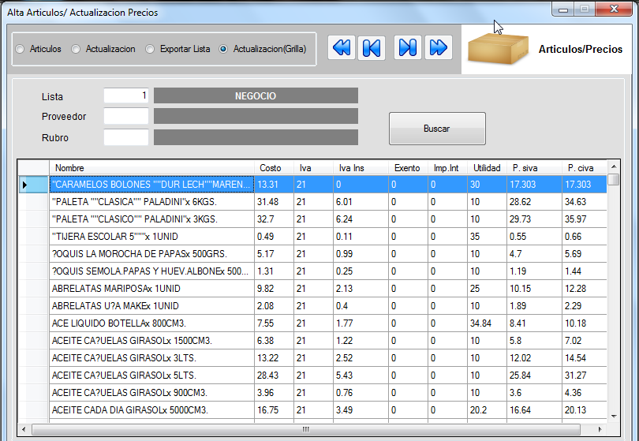

ARTICULOS
En la parte superior encontramos una casilla de opciones y el menu de flechas de navegacion para recorrer los registros. La primera opcion (Articulos) es la pantalla donde nos encontramos;podemos observar que tenemos la casilla lista para elegir la lista de precios que queremos ingresar dicho articulo o modificarlo. Cabe destacar que simepre con la tecla F1 podemos abrir un formulario de busqueda si no conocemos el codigo. Los campos marcados con asterisco en rojo son obligatorios.para movernos por el formulario lo hacemos con la tecla tab(
para recorrer los registros. La primera opcion (Articulos) es la pantalla donde nos encontramos;podemos observar que tenemos la casilla lista para elegir la lista de precios que queremos ingresar dicho articulo o modificarlo. Cabe destacar que simepre con la tecla F1 podemos abrir un formulario de busqueda si no conocemos el codigo. Los campos marcados con asterisco en rojo son obligatorios.para movernos por el formulario lo hacemos con la tecla tab(  ).Una vez completada todas las opciones al llegar a utilidad debemos poner el margen de ganancia que queremos darle al producto,atumoticamente la maquina calcula el precio s/iva y c/iva luego aceptamos y tenemos el articulo cargado
).Una vez completada todas las opciones al llegar a utilidad debemos poner el margen de ganancia que queremos darle al producto,atumoticamente la maquina calcula el precio s/iva y c/iva luego aceptamos y tenemos el articulo cargado

Actualizacion: encontramos 3 modulos, aqui debemos combinar las opciones que queramos dependiendo el tipo de actualizacion que queremos realizar.Mas abajo tenemos las casilla lista origen,lista destino donde ponemos primeramente la lista donde vamos a copiar leer los datos a copiar y la segunda es la que tomara los datos. Tambien encontramos las opciones rango desde - hasta para realizar una seleccion mas especifica dependiendo de las opciones selecionadas anteriormente. La casilla porcentaje es para poenr el margen que queremos incrementar o decrementar la combinacion realizaza.

Exportar lista: Aqui podemos crear o modificar un lista. La lista de origen esta como predeterminada la lista de principal y no se puede modificar. La lista destino podemos elegir cualquier lista creada

Actualizacion(grilla):Aca podemos selecionar la lista con la que queremos trabajar y si queremos hacer una busqueda mas especifica podemos filtrar por proveedor y rubro;le damos buscra y nos cargara la lista deseada donde podemos modificar el producto presionando enter sobre este nos abrira una nueva ventana

En esta ventana podemos realizar las operaciones de modificacion de precio como el costo, tipo de i.v.a, impuestos internos,utilidad; de estam manera vemos que el precio s/iva y c/iva varian. Le damos clic al boton actualizar y ya tenemos el producto modificado